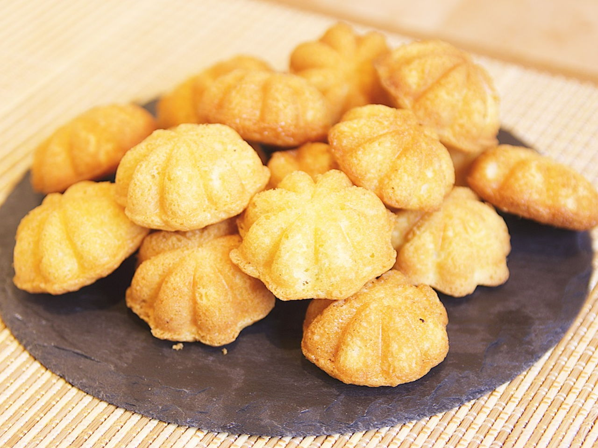

Kuih Bahulu

A tasty traditional treat with the taste of Malaysia
Prep time: 10 minutes
Cook time: 15 minutes
Total Time: 25 minutes
Yield: 4 people
Kuih Bahula is a traditional Malaysian cake that is a favorite for any and all
festive seasons, from Hari Raya to Chinese New Year. The bitesize bahulu are sweet
and eggy and go well with coffee (although I've always preferred them on their own).
Kuih Bahulu are commonly found in a flower shape because they are made from
a special Kuih Bahulu mold. It's hard to find this mold outside of Malaysia
so don't worry about hunting one down. A standard cupcake mold should work
just fine.
Ingredients
- 3 large eggs
- 1 cup sugar
- 1 tsp vanilla extract
- 1 1/4 cups all-purpose flour, sifted
- 1/4 tsp baking soda
- 3 tbsp cooking oil or melted unsalted butter
Steps
-
Preheat oven at 375℉ (190℃). Grease the mold with oil and
preheat the mold in the oven. Remove from the oven after done and keep
warm before use
-
Beat the eggs with an electric hand mixer until light and fluffy. Add
sugar and beat until sugar is dissolved and mixture is sticky.
-
Add in vanilla extract and fold in flour gradually. Add the cooking oil
or melted butter. Continue to the beat with hand-mixer until well-blended.
-
Fill the mold with the batter, about 90% full.
-
Bake for 15 minutes or until golden brown.
-
Remove cake from mold and leave it to cool on a wire rack. Dust
with powdered sugar if desired.
And you're done! Enjoy your tasty batch of Kuih Bahulu.
Back to Top
Return to Home